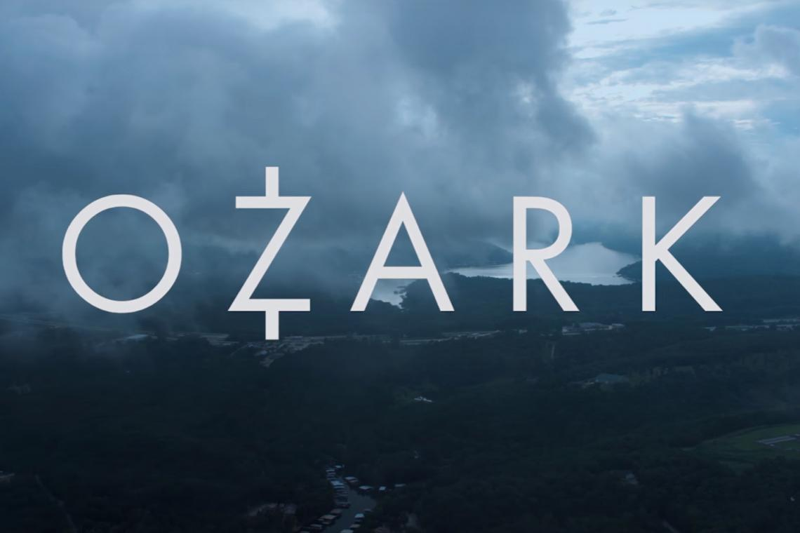

Todo el dinero del mundo no compra una salida
Marty Byrde es asesor financiero en Chicago hasta la noche en que un cartel mexicano descubre que sus socios vienen robando de la plata que lavan. Para seguir vivo propone algo mas grande: mudar la operacion a los lagos de Missouri y multiplicar ahi lo que ya no puede mover en la ciudad.
La familia entera termina arrastrada. Wendy deja de ser la esposa que acompaña y se convierte en la que negocia, Charlotte y Jonah aprenden demasiado rapido de que vive el padre, y los Langmore y los Snell les recuerdan que en el lago las reglas las pusieron otros mucho antes de que ellos llegaran.
Cuatro temporadas emitidas por Netflix entre 2017 y 2022, con Jason Bateman y Laura Linney al frente y una fotografia lavada en azules frios que volvio reconocible a la serie antes incluso que su historia.
Ver las temporadas